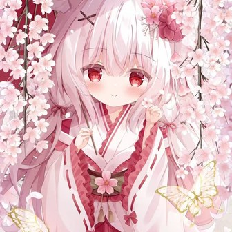

A little corner of the internet
你好，欢迎来到
Shiming 的小天地。
收藏喜欢的瞬间，连接有趣的世界。
这里有一点代码、一点日常，还有一只喜欢的狐狐。

Shiming
喜欢狐狐
♡ Welcome to my little world ♡
01 / FIND ME HERE
在这些地方，遇见我
02 / MADE & MAKING
代码与小小的创造
已经上线的小作品，与等待填满的灵感。标记“示例”的卡片仅为展示占位。